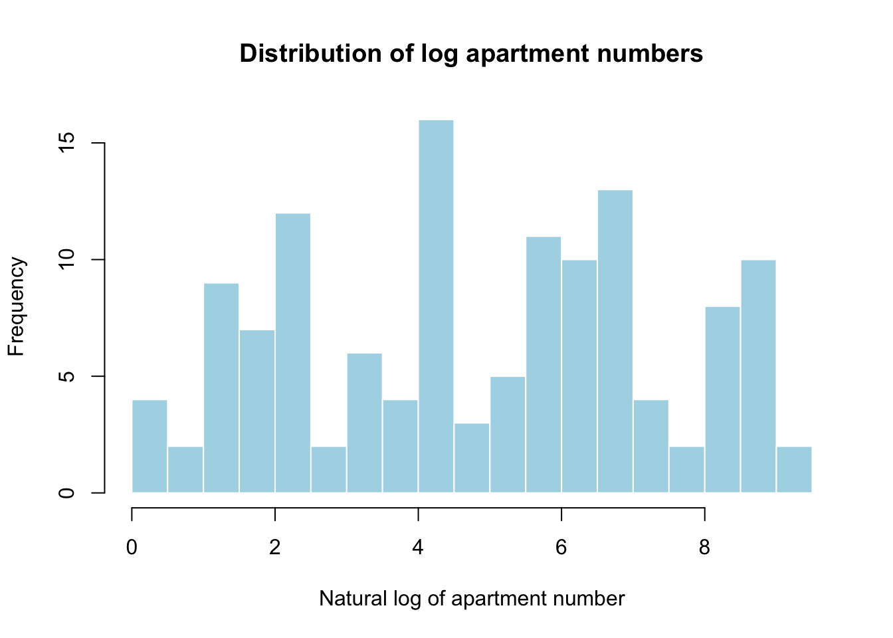
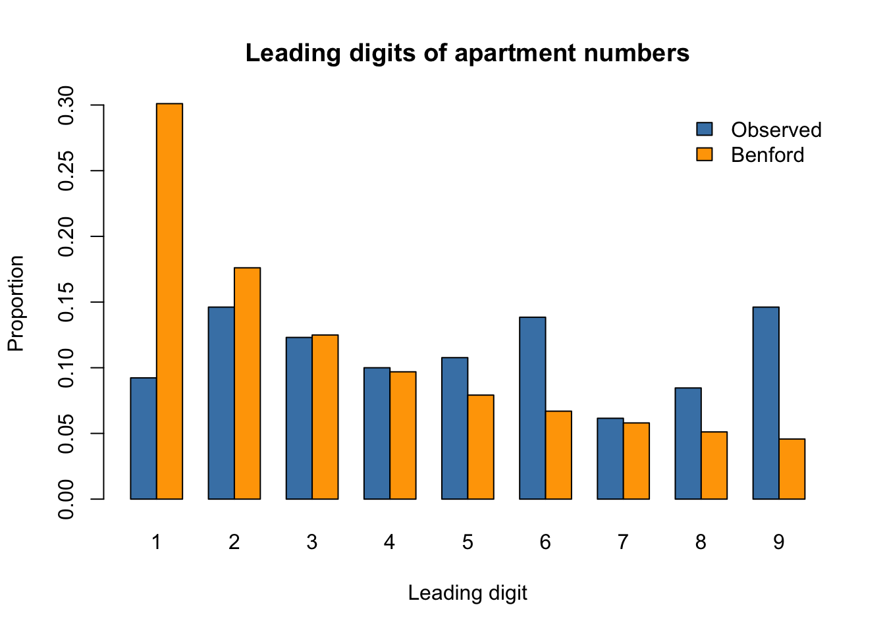

Show code
aux <- haven::read_xpt("AUX_I.xpt")
demo <- haven::read_xpt("DEMO_I.xpt")
dat <- merge(aux, demo, by = "SEQN", all = FALSE)
dim(dat)[1] 4582 119Answers are on Github at https://github.com/Yiwen-Hua/STATS_506_HW_3.git
aux <- haven::read_xpt("AUX_I.xpt")
demo <- haven::read_xpt("DEMO_I.xpt")
dat <- merge(aux, demo, by = "SEQN", all = FALSE)
dim(dat)[1] 4582 119table(dat$RIAGENDR, useNA="ifany")
1 2
2176 2406 table(dat$DMDCITZN, useNA="ifany")
1 2 7 9 <NA>
3684 884 8 5 1 table(dat$DMDHHSZA, useNA="ifany")
0 1 2 3
3463 737 317 65 table(dat$INDHHIN2, useNA="ifany")
1 2 3 4 5 6 7 8 9 10 12 13 14 15 77 99
101 146 233 262 272 461 439 381 295 244 145 53 458 795 86 63
<NA>
148 dat$gender <- factor(
dat$RIAGENDR,
levels = c(1, 2),
labels = c("Male", "Female")
)
citizen <-dat$DMDCITZN
citizen[citizen %in% c(7,9)] <- NA
dat$citizenship <- factor(
citizen,
levels = c(1, 2),
labels = c("US citizen", "Non US citizen")
)
dat$children <- as.numeric(dat$DMDHHSZA)
table(dat$gender, useNA = "ifany")
Male Female
2176 2406 table(dat$citizenship, useNA = "ifany")
US citizen Non US citizen <NA>
3684 884 14 table(dat$children, useNA = "ifany")
0 1 2 3
3463 737 317 65 income_codes <- c(1:10, 14, 15)
income_labels <- c(
"$0–4,999", "$5,000–9,999", "$10,000–14,999",
"$15,000–19,999", "$20,000–24,999", "$25,000–34,999",
"$35,000–44,999", "$45,000–54,999", "$55,000–64,999",
"$65,000–74,999", "$75,000–99,999", "$100,000+"
)
dat$income <- factor(
dat$INDHHIN2,
levels = income_codes,
labels = income_labels,
ordered = TRUE
)
dat$income_rank <- as.numeric(dat$income)
table(dat$income, useNA = "ifany")
$0–4,999 $5,000–9,999 $10,000–14,999 $15,000–19,999 $20,000–24,999
101 146 233 262 272
$25,000–34,999 $35,000–44,999 $45,000–54,999 $55,000–64,999 $65,000–74,999
461 439 381 295 244
$75,000–99,999 $100,000+ <NA>
458 795 495 sum(is.na(dat$income))[1] 495Gender and citizenship were converted to factors with informative levels; citizenship codes 7 and 9 were recoded as NA.
The number of young children remained numeric, with 3 representing three or more children.
Income codes 77 and 99 were recoded as NA; overlapping categories 12 and 13 were excluded from the derived income variable.
The remaining income brackets were ordered from lowest to highest and assigned descriptive factor levels.
Income-bracket ranks (1–12), rather than dollar amounts, were used as a numeric predictor in the regression models.
m1R <-glm(
AUXTWIDR ~ gender,
data = dat,
family = poisson(link = "log"),
na.action = na.omit
)
m2R <-glm(
AUXTWIDR ~ gender + citizenship + children + income_rank,
data = dat,
family = poisson(link = "log"),
na.action = na.omit
)
m1L <-glm(
AUXTWIDL ~ gender,
data = dat,
family = poisson(link = "log"),
na.action = na.omit
)
m2L <-glm(
AUXTWIDL ~ gender + citizenship + children + income_rank,
data = dat,
family = poisson(link = "log"),
na.action = na.omit
)
models <- list("1R" = m1R, "2R" = m2R, "1L" = m1L, "2L" = m2L)
irr_table <- data.frame(
Term = c(
"Intercept", "Female vs Male", "Non-US vs US citizen",
"Children (per unit)", "Income rank (per bracket)"
),
check.names = FALSE
)
for (name in names(models)) {
values <- exp(coef(models[[name]]))
column <- rep(NA_real_, 5)
if (name %in% c("1R", "1L")) {
column[1:2] <- values
} else {
column[] <- values
}
irr_table[[name]] <- column
}
knitr::kable(
irr_table,
digits = 3,
caption = "Exponentiated Poisson regression coefficients"
)| Term | 1R | 2R | 1L | 2L |
|---|---|---|---|---|
| Intercept | 84.317 | 88.437 | 84.758 | 88.821 |
| Female vs Male | 1.009 | 1.015 | 1.013 | 1.019 |
| Non-US vs US citizen | NA | 1.047 | NA | 1.022 |
| Children (per unit) | NA | 0.994 | NA | 0.983 |
| Income rank (per bracket) | NA | 0.992 | NA | 0.993 |
# Summarize one fitted model.
# Input: a model name in models. Returns: one row of fit statistics.
model_stats <- function(name) {
model <- models[[name]]
# Fit the null model using the same observations
null_model <- update(
model,
. ~ 1,
data = model.frame(model)
)
data.frame(
Model = name,
N = nobs(model),
McFadden_R2 = 1 -
as.numeric(logLik(model)) / as.numeric(logLik(null_model)),
AIC = AIC(model)
)
}
stats_table <- do.call(
rbind,
lapply(names(models), model_stats)
)
knitr::kable(
stats_table,
digits = c(0, 0, 4, 1),
caption = "Model statistics (McFadden pseudo-R²)"
)| Model | N | McFadden_R2 | AIC |
|---|---|---|---|
| 1R | 4149 | 0.0001 | 96618.5 |
| 2R | 3705 | 0.0042 | 84916.0 |
| 1L | 4103 | 0.0001 | 98685.1 |
| 2L | 3665 | 0.0027 | 86598.0 |
# Extract the gender coefficient and its standard error
beta <- coef(m2L)["genderFemale"]
se <- sqrt(vcov(m2L)["genderFemale", "genderFemale"])
# Wald test: H0: beta = 0, equivalently IRR = 1
z_gender <- beta / se
p_gender <- 2 * pnorm(-abs(z_gender))
gender_test <- data.frame(
Comparison = "Female vs Male",
IRR = exp(beta),
CI_lower = exp(beta - qnorm(0.975) * se),
CI_upper = exp(beta + qnorm(0.975) * se),
z = z_gender,
p_value = p_gender
)
knitr::kable(
gender_test,
digits = c(0, 4, 4, 4, 3, 9),
caption = "Gender IRR and 95% Wald confidence interval, model 2L"
)| Comparison | IRR | CI_lower | CI_upper | z | p_value | |
|---|---|---|---|---|---|---|
| genderFemale | Female vs Male | 1.0187 | 1.0116 | 1.026 | 5.16 | 2.47e-07 |
# Calculate an average prediction and its gradient.
# Inputs: gender label and fitted model. Returns: mean and gradient.
mean_prediction <- function(group, model) {
newdata <- model.frame(model)
newdata$gender <- factor(
rep(group, nrow(newdata)),
levels = model$xlevels$gender
)
X <- model.matrix(
delete.response(terms(model)),
data = newdata,
contrasts.arg = model$contrasts
)
mu <- as.vector(exp(X %*% coef(model)))
list(
mean = mean(mu),
gradient = colMeans(sweep(X, 1, mu, "*"))
)
}
female_pred <- mean_prediction("Female", m2L)
male_pred <- mean_prediction("Male", m2L)
# Difference and delta-method standard error
pred_diff <- female_pred$mean - male_pred$mean
gradient_diff <- female_pred$gradient - male_pred$gradient
se_diff <- sqrt(
as.numeric(t(gradient_diff) %*% vcov(m2L) %*% gradient_diff)
)
z_diff <- pred_diff / se_diff
p_diff <- 2 * pnorm(-abs(z_diff))
prediction_test <- data.frame(
Male = male_pred$mean,
Female = female_pred$mean,
Difference = pred_diff,
CI_lower = pred_diff - qnorm(0.975) * se_diff,
CI_upper = pred_diff + qnorm(0.975) * se_diff,
z = z_diff,
p_value = p_diff
)
knitr::kable(
prediction_test,
digits = c(3, 3, 3, 3, 3, 3, 9),
caption = "Adjusted mean predictions and Female–Male difference"
)| Male | Female | Difference | CI_lower | CI_upper | z | p_value |
|---|---|---|---|---|---|---|
| 84.211 | 85.79 | 1.579 | 0.979 | 2.178 | 5.163 | 2.43e-07 |
In model 2L, the female-to-male IRR was 1.0187 (95% CI: 1.0116–1.0260; Wald z = 5.160, p = 2.47 × 10⁻⁷), indicating a 1.87% higher expected left-ear tympanometric width for females, adjusting for the other predictors. Averaging predictions over the same model sample gave adjusted means of 85.790 for females and 84.211 for males. The female–male difference was 1.579 (95% CI: 0.979–2.178; delta-method z = 5.163, p = 2.43 × 10⁻⁷). Both tests reject their respective null hypotheses under the fitted Poisson model, although the estimated difference is small.
# Open a read-only connection
con <- DBI::dbConnect(
RSQLite::SQLite(),
dbname = "sakila_master.db",
flags = RSQLite::SQLITE_RO
)
# Inspect the customer table
DBI::dbGetQuery(
con,
"SELECT customer_id, store_id, active
FROM customer
LIMIT 6"
) customer_id store_id active
1 1 1 1
2 2 1 1
3 3 1 1
4 4 2 1
5 5 1 1
6 6 2 1# Summarize customers by store using R.
# Input: database connection. Returns: customer counts and active percentages.
customers_r <- function(con) {
customers <- DBI::dbGetQuery(
con,
"SELECT store_id, active FROM customer"
)
counts <- aggregate(
list(Customers = rep(1L, nrow(customers))),
by = list(Store = customers$store_id),
FUN = sum
)
percentages <- aggregate(
list(Active_percent = 100 * (customers$active == "1")),
by = list(Store = customers$store_id),
FUN = mean
)
merge(counts, percentages, by = "Store")
}
# Summarize customers by store using one SQL query.
# Input: database connection. Returns: customer counts and active percentages.
customers_sql <- function(con) {
DBI::dbGetQuery(
con,
"SELECT store_id AS Store,
COUNT(*) AS Customers,
100.0 * AVG(CASE WHEN active = '1' THEN 1.0 ELSE 0.0 END)
AS Active_percent
FROM customer
GROUP BY store_id
ORDER BY store_id"
)
}
result_r <- customers_r(con)
result_sql <- customers_sql(con)
# Check that both approaches return the same results
stopifnot(isTRUE(all.equal(result_r, result_sql)))
knitr::kable(
result_sql,
digits = c(0, 0, 2),
caption = "Customer counts and active percentages by store"
)| Store | Customers | Active_percent |
|---|---|---|
| 1 | 326 | 97.55 |
| 2 | 273 | 97.44 |
# Include database retrieval in both timings
timing_a <- microbenchmark::microbenchmark(
R = customers_r(con),
SQL = customers_sql(con),
times = 100L
)Warning in microbenchmark::microbenchmark(R = customers_r(con), SQL =
customers_sql(con), : less accurate nanosecond times to avoid potential integer
overflowsknitr::kable(
summary(timing_a, unit = "ms")[
, c("expr", "min", "median", "mean", "max", "neval")
],
digits = 3,
caption = "Execution time comparison (milliseconds)"
)| expr | min | median | mean | max | neval |
|---|---|---|---|---|---|
| R | 0.812 | 0.855 | 0.919 | 3.049 | 100 |
| SQL | 0.158 | 0.175 | 0.182 | 0.698 | 100 |
Store 1 had 326 customers, of whom 97.55% were active; Store 2 had 273 customers, of whom 97.44% were active.
The R and SQL approaches returned identical results.
Across 100 repetitions, SQL had a lower median execution time than the R approach, including database retrieval.
# Find staff names and countries using R joins.
# Input: database connection. Returns: staff names and countries.
staff_r <- function(con) {
staff <- DBI::dbGetQuery(
con, "SELECT staff_id, first_name, last_name, address_id FROM staff"
)
address <- DBI::dbGetQuery(
con, "SELECT address_id, city_id FROM address"
)
city <- DBI::dbGetQuery(
con, "SELECT city_id, country_id FROM city"
)
country <- DBI::dbGetQuery(
con, "SELECT country_id, country FROM country"
)
joined <- merge(staff, address, by = "address_id")
joined <- merge(joined, city, by = "city_id")
joined <- merge(joined, country, by = "country_id")
joined <- joined[order(joined$staff_id), ]
result <- joined[, c("first_name", "last_name", "country")]
rownames(result) <- NULL
result
}
# Find staff names and countries using one SQL query.
# Input: database connection. Returns: staff names and countries.
staff_sql <- function(con) {
DBI::dbGetQuery(
con,
"SELECT s.first_name, s.last_name, co.country
FROM staff AS s
JOIN address AS a ON s.address_id = a.address_id
JOIN city AS c ON a.city_id = c.city_id
JOIN country AS co ON c.country_id = co.country_id
ORDER BY s.staff_id"
)
}
staff_result_r <- staff_r(con)
staff_result_sql <- staff_sql(con)
stopifnot(isTRUE(all.equal(staff_result_r, staff_result_sql)))
knitr::kable(
staff_result_sql,
col.names = c("First name", "Last name", "Country"),
caption = "Staff names and countries"
)| First name | Last name | Country |
|---|---|---|
| Mike | Hillyer | Canada |
| Jon | Stephens | Australia |
timing_b <- microbenchmark::microbenchmark(
R = staff_r(con),
SQL = staff_sql(con),
times = 100L
)
knitr::kable(
summary(timing_b, unit = "ms")[
, c("expr", "min", "median", "mean", "max", "neval")
],
digits = 3,
caption = "Execution time comparison (milliseconds)"
)| expr | min | median | mean | max | neval |
|---|---|---|---|---|---|
| R | 1.059 | 1.087 | 1.125 | 2.441 | 100 |
| SQL | 0.100 | 0.107 | 0.114 | 0.695 | 100 |
Mike Hillyer was associated with Canada, and Jon Stephens with Australia. Both approaches returned identical results. SQL had a lower median execution time across 100 repetitions.
# Find films associated with the highest single-rental payment using R.
# Input: database connection. Returns: film IDs, titles and rental amounts.
highest_rental_r <- function(con) {
payment <- DBI::dbGetQuery(
con, "SELECT rental_id, amount FROM payment WHERE rental_id IS NOT NULL"
)
rental <- DBI::dbGetQuery(
con, "SELECT rental_id, inventory_id FROM rental"
)
inventory <- DBI::dbGetQuery(
con, "SELECT inventory_id, film_id FROM inventory"
)
film <- DBI::dbGetQuery(
con, "SELECT film_id, title FROM film"
)
totals <- aggregate(amount ~ rental_id, data = payment, FUN = sum)
highest <- totals[totals$amount == max(totals$amount), ]
joined <- merge(highest, rental, by = "rental_id")
joined <- merge(joined, inventory, by = "inventory_id")
joined <- merge(joined, film, by = "film_id")
result <- unique(joined[, c("film_id", "title", "amount")])
result <- result[order(result$film_id), ]
rownames(result) <- NULL
result
}
# Find films associated with the highest rental payment using one SQL query.
# Input: database connection. Returns: film IDs, titles and rental amounts.
highest_rental_sql <- function(con) {
DBI::dbGetQuery(
con,
"WITH rental_totals AS (
SELECT rental_id, SUM(amount) AS amount
FROM payment
WHERE rental_id IS NOT NULL
GROUP BY rental_id
)
SELECT DISTINCT f.film_id, f.title, p.amount
FROM rental_totals AS p
JOIN rental AS r ON p.rental_id = r.rental_id
JOIN inventory AS i ON r.inventory_id = i.inventory_id
JOIN film AS f ON i.film_id = f.film_id
WHERE p.amount = (SELECT MAX(amount) FROM rental_totals)
ORDER BY f.film_id"
)
}
film_result_r <- highest_rental_r(con)
film_result_sql <- highest_rental_sql(con)
stopifnot(isTRUE(all.equal(film_result_r, film_result_sql)))
knitr::kable(
film_result_sql,
digits = 2,
col.names = c("Film ID", "Title", "Rental amount (USD)"),
caption = "Films associated with the highest single-rental payment"
)| Film ID | Title | Rental amount (USD) |
|---|---|---|
| 324 | FLINTSTONES HAPPINESS | 11.99 |
| 575 | MIDSUMMER GROUNDHOG | 11.99 |
| 580 | MINE TITANS | 11.99 |
| 771 | SCORPION APOLLO | 11.99 |
| 791 | SHOW LORD | 11.99 |
| 846 | STING PERSONAL | 11.99 |
| 889 | TIES HUNGER | 11.99 |
| 908 | TRAP GUYS | 11.99 |
| 946 | VIRTUAL SPOILERS | 11.99 |
timing_c <- microbenchmark::microbenchmark(
R = highest_rental_r(con),
SQL = highest_rental_sql(con),
times = 100L
)
knitr::kable(
summary(timing_c, unit = "ms")[
, c("expr", "min", "median", "mean", "max", "neval")
],
digits = 3,
caption = "Execution time comparison (milliseconds)"
)| expr | min | median | mean | max | neval |
|---|---|---|---|---|---|
| R | 73.339 | 74.685 | 75.294 | 92.486 | 100 |
| SQL | 4.840 | 5.548 | 5.346 | 6.393 | 100 |
The highest single-rental payment was $11.99; all films associated with this amount are listed in the table.
The R and SQL approaches returned identical results.
Across 100 repetitions, SQL had a lower median execution time than the R approach, including database retrieval.
DBI::dbDisconnect(con)# Read all columns as text to preserve phone numbers and postal codes
australia <- read.csv(
"au-500.csv",
colClasses = "character",
stringsAsFactors = FALSE
)
dim(australia)[1] 500 11names(australia) [1] "first_name" "last_name" "company_name" "address" "city"
[6] "state" "post" "phone1" "phone2" "email"
[11] "web" # Match .com at the end, allowing an optional trailing slash
is_com <- grepl("\\.com/?$", tolower(trimws(australia$web)))
com_result <- data.frame(
Total = nrow(australia),
Com_websites = sum(is_com),
Percent = 100 * mean(is_com)
)
knitr::kable(com_result, digits = 2)| Total | Com_websites | Percent |
|---|---|---|
| 500 | 0 | 0 |
None of the 500 websites ended in .com, so the percentage was 0%. All websites ended in .com.au, which was excluded as specified in the question
# Extract everything after @ and count each domain
email_domain <- sub("^.*@", "", tolower(trimws(australia$email)))
domain_counts <- sort(table(email_domain), decreasing = TRUE)
# Keep all domains tied for the highest count
top_domains <- domain_counts[domain_counts == max(domain_counts)]
knitr::kable(
data.frame(
Domain = names(top_domains),
Count = as.integer(top_domains)
),
caption = "Most common email domain(s)"
)| Domain | Count |
|---|---|
| hotmail.com | 114 |
The most common email domain was hotmail.com, appearing in 114 of 500 records (22.8%).
# Detect characters outside each allowed set
has_other <- grepl(
"[^[:alpha:],[:space:]]",
australia$company_name
)
has_other_no_amp <- grepl(
"[^[:alpha:],[:space:]&]",
australia$company_name
)
company_result <- data.frame(
Rule = c(
"Exclude commas and whitespace",
"Exclude commas, whitespace and ampersands"
),
Count = c(sum(has_other), sum(has_other_no_amp)),
Proportion = c(mean(has_other), mean(has_other_no_amp))
)
knitr::kable(
company_result,
digits = 3,
caption = "Company names containing eligible non-alphabetic characters"
)| Rule | Count | Proportion |
|---|---|---|
| Exclude commas and whitespace | 45 | 0.090 |
| Exclude commas, whitespace and ampersands | 4 | 0.008 |
Excluding commas and whitespace, 45 company names (9.0%) contained a non-alphabetic character. When ampersands were also excluded, this decreased to 4 company names (0.8%).
# Format phone numbers into groups of 4, 3 and 3 digits.
# Input: a character vector of phones. Returns: formatted phone strings.
format_phone <- function(phone) {
digits <- gsub("[^0-9]", "", phone)
# Check that all numbers contain exactly ten digits
stopifnot(all(!is.na(digits) & nchar(digits) == 10))
sub(
"^([0-9]{4})([0-9]{3})([0-9]{3})$",
"\\1-\\2-\\3",
digits
)
}
australia$phone1 <- format_phone(australia$phone1)
australia$phone2 <- format_phone(australia$phone2)
knitr::kable(
head(australia[, c("phone1", "phone2")], 10),
caption = "First ten standardized phone numbers in each column"
)| phone1 | phone2 |
|---|---|
| 0381-749-123 | 0458-665-290 |
| 0799-973-366 | 0497-622-620 |
| 0855-589-019 | 0427-885-282 |
| 0260-444-682 | 0443-795-912 |
| 0214-556-085 | 0453-666-885 |
| 0878-681-355 | 0451-966-921 |
| 0865-228-931 | 0427-991-688 |
| 0252-269-402 | 0415-961-606 |
| 0731-849-989 | 0411-732-965 |
| 0868-904-661 | 0461-862-457 |
# Verify that every formatted number follows the required pattern
stopifnot(
all(grepl("^[0-9]{4}-[0-9]{3}-[0-9]{3}$", australia$phone1)),
all(grepl("^[0-9]{4}-[0-9]{3}-[0-9]{3}$", australia$phone2))
)# Identify addresses ending in a number
address_text <- trimws(australia$address)
has_apartment <- grepl("[0-9]+$", address_text)
# Extract the full trailing number
apartment <- rep(NA_real_, nrow(australia))
apartment[has_apartment] <- as.numeric(
sub(
"^.*?([0-9]+)$",
"\\1",
address_text[has_apartment],
perl = TRUE
)
)
# Use positive apartment numbers because log(0) is undefined
apartment_positive <- apartment[
!is.na(apartment) & apartment > 0
]
hist(
log(apartment_positive),
breaks = 15,
main = "Distribution of log apartment numbers",
xlab = "Natural log of apartment number",
col = "lightblue",
border = "white"
)
# Check the extracted values and the number used
head(
data.frame(Address = australia$address, Apartment = apartment),
10
) Address Apartment
1 171 E 24th St NA
2 22222 Acoma St NA
3 534 Schoenborn St #51 51
4 69206 Jackson Ave NA
5 808 Glen Cove Ave NA
6 373 Lafayette St NA
7 87 Sylvan Ave NA
8 60562 Ky Rt 321 321
9 70 S 18th Pl NA
10 8839 Ventura Blvd NAlength(apartment_positive)[1] 130# Count leading digits, including digits with zero observations
leading_digit <- as.integer(
substr(as.character(apartment_positive), 1, 1)
)
observed <- table(factor(leading_digit, levels = 1:9))
benford_prob <- log10(1 + 1 / (1:9))
benford_table <- data.frame(
Digit = 1:9,
Count = as.integer(observed),
Observed_proportion = as.numeric(observed) / sum(observed),
Benford_proportion = benford_prob
)
knitr::kable(
benford_table,
digits = c(0, 0, 3, 3),
caption = "Observed leading digits versus Benford probabilities"
)| Digit | Count | Observed_proportion | Benford_proportion |
|---|---|---|---|
| 1 | 12 | 0.092 | 0.301 |
| 2 | 19 | 0.146 | 0.176 |
| 3 | 16 | 0.123 | 0.125 |
| 4 | 13 | 0.100 | 0.097 |
| 5 | 14 | 0.108 | 0.079 |
| 6 | 18 | 0.138 | 0.067 |
| 7 | 8 | 0.062 | 0.058 |
| 8 | 11 | 0.085 | 0.051 |
| 9 | 19 | 0.146 | 0.046 |
# Compare observed and expected proportions
barplot(
rbind(
benford_table$Observed_proportion,
benford_table$Benford_proportion
),
beside = TRUE,
names.arg = 1:9,
col = c("steelblue", "orange"),
legend.text = c("Observed", "Benford"),
args.legend = list(x = "topright", bty = "n"),
main = "Leading digits of apartment numbers",
xlab = "Leading digit",
ylab = "Proportion"
)
# Chi-squared goodness-of-fit test
benford_test <- chisq.test(
x = as.numeric(observed),
p = benford_prob
)
knitr::kable(
data.frame(
Chi_squared = unname(benford_test$statistic),
df = unname(benford_test$parameter),
p_value = format.pval(benford_test$p.value, digits = 3)
),
digits = c(3, 0, 6),
caption = "Goodness-of-fit test against Benford's law"
)| Chi_squared | df | p_value |
|---|---|---|
| 62.268 | 8 | 1.67e-10 |
The leading digits differed significantly from Benford’s distribution (χ² = 62.268, df = 8, p < 0.001). Only 9.2% began with 1, compared with the expected 30.1%, while 14.6% began with 9, compared with 4.6%. Thus, these apartment numbers would fail a Benford-based screening check. However, apartment numbers are assigned identifiers and need not follow Benford’s law, so this result alone cannot establish whether the data are real.